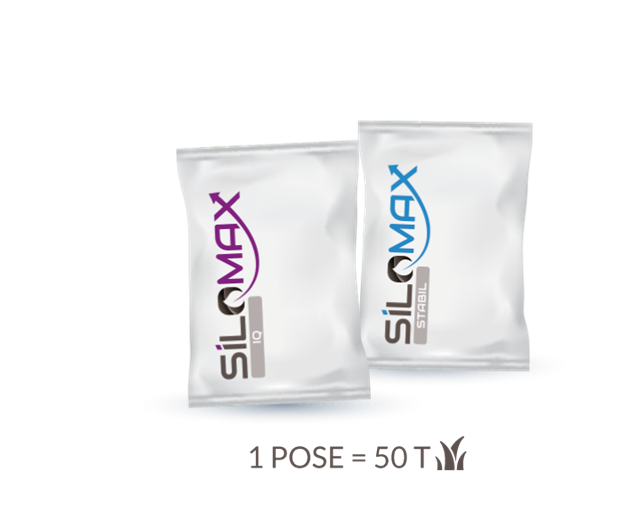
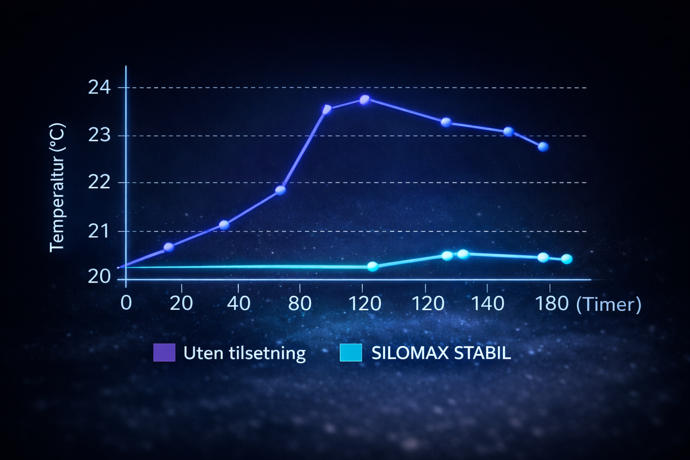
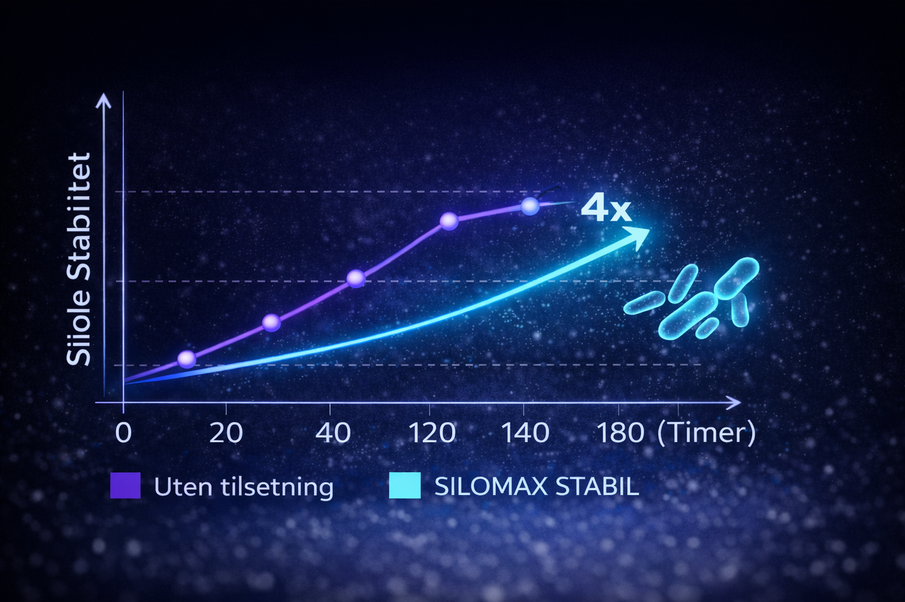
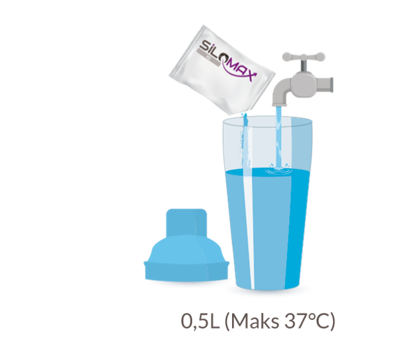
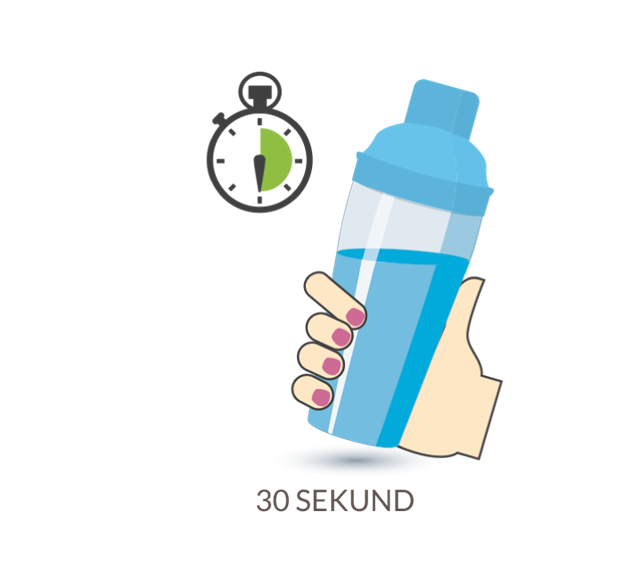
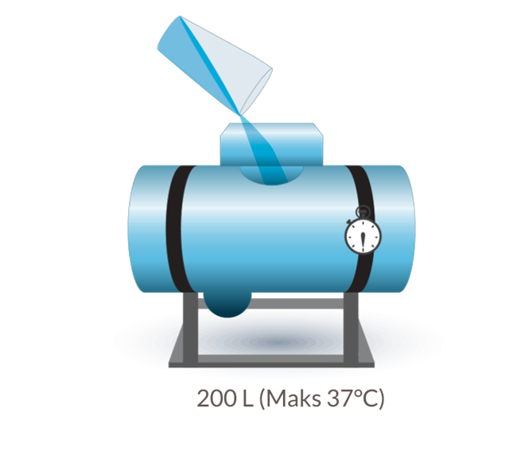

01

Steg 1
Mål opp dose
Mål opp riktig mengde pulver etter antall tonn gras som skal ensileres.

Silomax STABIL
Betydelig mindre gjær og mugg – opptil 90 % reduksjon.

4 ganger lengre stabilitet etter åpning av siloen.
SILOMAX STABIL gir en mer stabil silo etter åpning.

Hemmer gjær og muggsopp og reduserer varmgang.
Slik klargjør og bruker du Silomax STABIL for maksimal lagringsstabilitet

Mål opp riktig mengde pulver etter antall tonn gras som skal ensileres.

Hell pulveret i rent, lunkent vann for å aktivere melkesyrebakteriene.

Rist beholderen godt i minst 30 sekunder til alt pulveret er helt oppløst.

Hell den ferdigblandede løsningen over i doseringsutstyret og start høstingen.